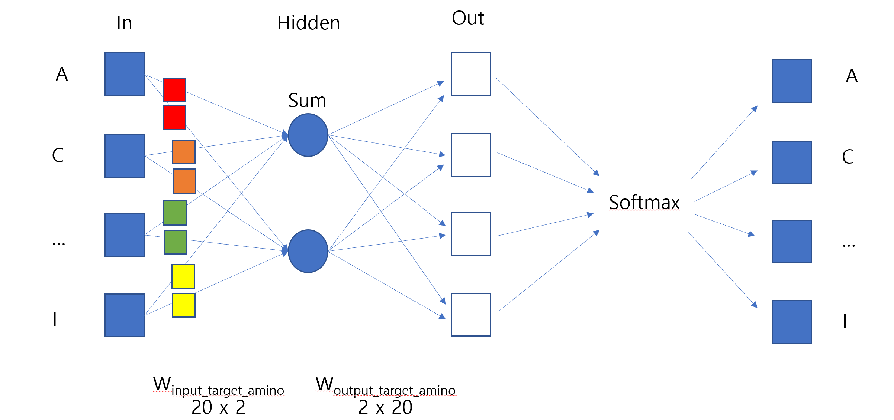

Similar words or tokens are mapped to similar embeddings in the vector space.
“king” and “queen” might be close in embedding space, capturing semantic similarity.
Efficient Computation
Dense vectors are smaller and faster to process compared to sparse representations like one-hot encoding.
7.2.0.1 Types
k-mer Encoding
Used for DNA/RNA sequences by splitting into overlapping k-length substrings.
Sequence: "ACGTAC"
3-mer: ["ACG", "CGT", "GTA", "TAC"]
Label Encoding
Maps each k-mer to a unique integer.
Encoding: {"ACG": 0, "CGT": 1, "GTA": 2}
One-Hot Encoding
Represents nucleotides (e.g., A, C, G, T) as binary vectors.
A → [1, 0, 0, 0]
Embedding
Converts nucleotides, k-mers, or amino acids into dense vectors.
A → [0.3, 0.7, -0.1]
7.2.1 Word2Vec
It generates word embeddings dense vector representations of words that capture their meanings and relationships.
Unlike traditional representations (e.g., one-hot encoding), Word2Vec places words with similar meanings closer together in a high-dimensional vector space, enabling models to understand semantic and syntactic relationships between words.

7.2.1.1 Data
import numpy as npimport matplotlib.pyplot as pltimport randomnum_samples =500num_aa_len =10# Define amino acidsamino_acids = ["A", "R", "N", "D", "C", "Q", "E", "G", "H", "I", "L", "K", "M", "F", "P", "S", "T", "W", "Y", "V"]# Generate synthetic amino acid sequences (random sequences)random_corpus_amino = [[random.choice(amino_acids) for _ inrange(num_aa_len)] for _ inrange(num_samples)]# Define specific amino acids to make closertarget_amino_acids = ["A", "C", "K", "I"] # Sequence to be inserted# Insert target_amino_acids into the middle of each sequence in random_corpus_aminofull_corpus_target_amino = []for seq in random_corpus_amino: mid_index =len(seq) //2 new_seq = seq[:mid_index] + target_amino_acids + seq[mid_index:] full_corpus_target_amino.append(new_seq)# Show shape and content of `full_corpus_target_amino`print("Number of sequences in full_corpus_target_amino:", len(full_corpus_target_amino))print("Example sequence (with inserted target_amino_acids):", full_corpus_target_amino[0])
Number of sequences in full_corpus_target_amino: 500
Example sequence (with inserted target_amino_acids): ['G', 'N', 'R', 'P', 'P', 'A', 'C', 'K', 'I', 'C', 'Q', 'V', 'N', 'M']
Index 0: G
Index 1: N
Index 2: R
Index 3: P
Index 4: P
Index 5: A
Index 6: C
Index 7: K
Index 8: I
Index 9: C
Index 10: Q
Index 11: V
Index 12: N
Index 13: M
# Build vocabularyvocab_target_amino = {aa: idx for idx, aa inenumerate(set(aa for seq in full_corpus_target_amino for aa in seq))}vocab_size_target_amino =len(vocab_target_amino)print("Vocabulary size:", vocab_size_target_amino)# Prepare training data (target, context) pairswindow_size =2# Context window sizetraining_data_target_amino = []for seq in full_corpus_target_amino:# print("Sequence:", seq)for idx, target inenumerate(seq): context_indices =list(range(max(0, idx - window_size), min(len(seq), idx + window_size +1)))# print("Context indices:", context_indices)if idx in context_indices: # Prevent self-reference context_indices.remove(idx)for context_idx in context_indices: training_data_target_amino.append((vocab_target_amino[target], vocab_target_amino[seq[context_idx]]))# print("Target:", target, "Context:", seq[context_idx])# print("\n")print("Number of training pairs:", len(training_data_target_amino))print("Example training pair:", training_data_target_amino[:5])
Vocabulary size: 20
Number of training pairs: 25000
Example training pair: [(10, 19), (10, 8), (19, 10), (19, 8), (19, 0)]
Vocabulary size: 20
Sequence: ['K', 'I', 'G', 'P', 'K', 'A', 'C', 'K', 'I', 'V', 'F', 'D', 'Q', 'G']
Target: K Context: I
Target: K Context: G
Target: I Context: K
Target: I Context: G
Target: I Context: P
Target: G Context: K
Target: G Context: I
Target: G Context: P
Target: G Context: K
Target: P Context: I
Target: P Context: G
Target: P Context: K
Target: P Context: A
Target: K Context: G
Target: K Context: P
Target: K Context: A
Target: K Context: C
Target: A Context: P
Target: A Context: K
Target: A Context: C
Target: A Context: K
import numpy as np# Define the encoder classclass Encoder:def__init__(self, vocab_size, embedding_dim, hidden_dim):self.embedding_dim = embedding_dimself.hidden_dim = hidden_dim# Initialize weightsself.embeddings = np.random.randn(vocab_size, embedding_dim)self.W_xh = np.random.randn(embedding_dim, hidden_dim)self.W_hh = np.random.randn(hidden_dim, hidden_dim)self.b_h = np.random.randn(hidden_dim)def forward(self, sequence): hidden_states = [] h_prev = np.zeros(self.hidden_dim) # Initial hidden statefor idx in sequence: x_emb =self.embeddings[idx] # Get the embedding for the current input h_t = np.tanh(np.dot(x_emb, self.W_xh) + np.dot(h_prev, self.W_hh) +self.b_h) # Compute new hidden state hidden_states.append(h_t) h_prev = h_t # Update the previous hidden statereturn np.array(hidden_states)# Initialize encodervocab_size =len(vocab_target_amino) # Use the vocabulary size from your dataembedding_dim = emb_sequence.shape[1] # Use the embedding dimension from your dataencoder = Encoder(vocab_size, embedding_dim, hidden_dim)# Encode full corpusencoded_corpus = []for seq in full_corpus_target_amino:# Convert sequence of amino acids to indices sequence_indices = [vocab_target_amino[aa] for aa in seq]# Encode the sequence hidden_states = encoder.forward(sequence_indices) encoded_corpus.append(hidden_states)# Display the results for the first sequenceprint("Encoded hidden states shape for the first sequence:", encoded_corpus[0].shape)print("Encoded hidden states for the first sequence:")print(encoded_corpus[0])